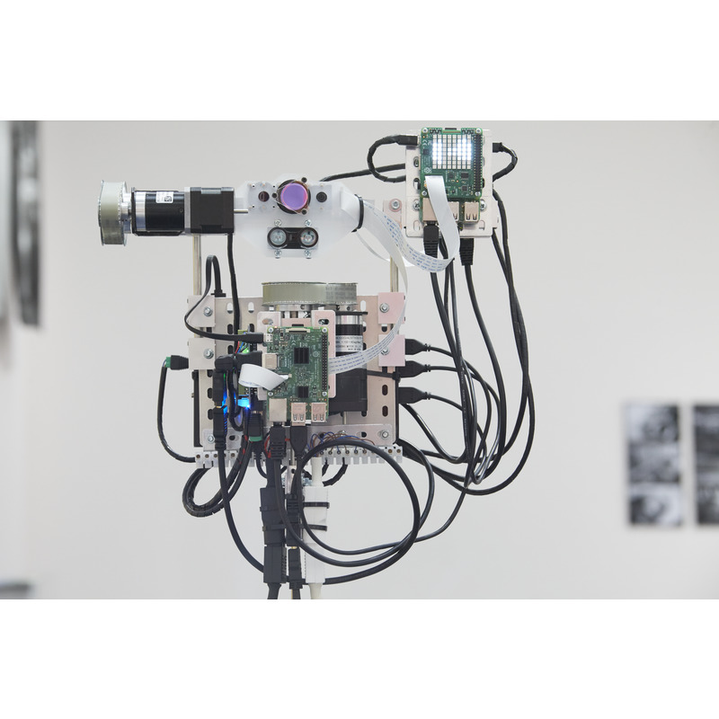
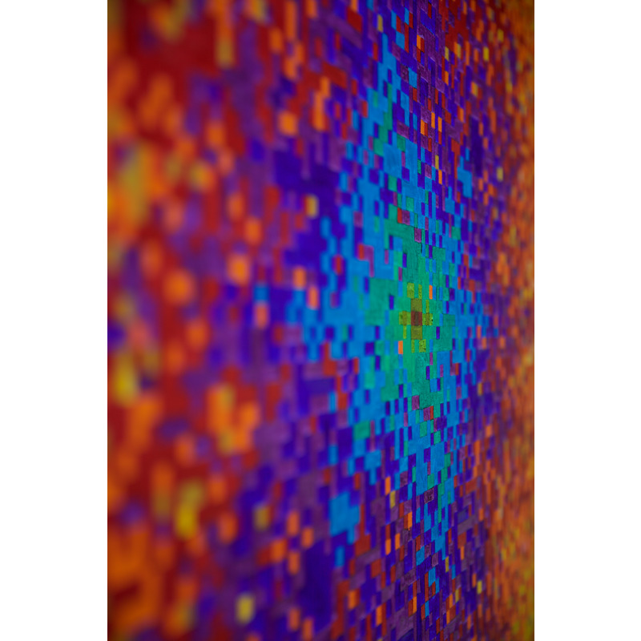

1 of 7
2 of 7

3 of 7

4 of 7

5 of 7
6 of 7
7 of 7

How can technology and the scientific method be used in the service of art? Hipwell's practice has a significant computational component; transforming, decomposing and reconstructing image information across a range of media.
In Standing Wave, Change Hands a lightbox displays a 35mm negative of a pair of hands from 1958. The image has been decomposed into individual frequencies that correspond to the ripples of intensity across its surface, and these are rendered as a pair of oil paintings. This painted spectrum (magnitude and phase) is reconstructed into an image by a "painting recognition" apparatus, fusing traces of painted brushstrokes with intensities from the original photograph.
Each of us is a node in a standing wave that stretches back across the generations, changing hands.